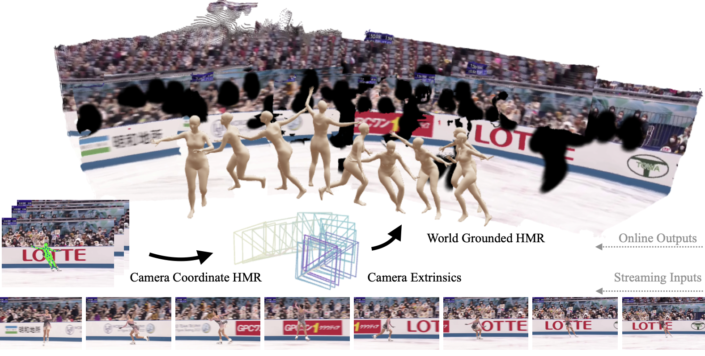

OnlineHMR: Video-based Online World-Grounded Human Mesh Recovery

Given a streaming video as input, OnlineHMR recovers the world coordinates human mesh and camera trajectory in an online manner.

Explore the 4D reconstruction results on various number of individuals and diverse scene.
(Point clouds are downsampled for efficient online rendering)
Human mesh recovery (HMR) models 3D human body from monocular videos, with recent works extending it to world-coordinate human trajectory and motion reconstruction. However, most existing methods remain offline, relying on future frames or global optimization, which limits their applicability in interactive feedback and perception-action loop scenarios such as AR/VR and telepresence. To address this, we propose OnlineHMR, a fully online framework that jointly satisfies four essential criteria of online processing, including system-level causality, faithfulness, temporal consistency, and efficiency. Built upon a two-branch architecture, OnlineHMR enables streaming inference via a causal key–value cache design and a curated sliding-window learning strategy. Meanwhile, a human-centric incremental SLAM provides online world-grounded alignment under physically plausible trajectory correction. Experimental results show that our method achieves performance comparable to existing chunk-based approaches on the standard EMDB benchmark and highly dynamic custom videos, while uniquely supporting online processing.
Leveraging information only from previous frames through a cache memory.

Quantitatively, we compare our result with previous and concurrent offline/online methods on the camera coordinate benchmark 3DPW and EMDB1, and world coordinate benchmark EMDB2. Qualitatively, we test our method on custom art and sports videos.

0:00-1:20, custom videos. 1:20-2:58, EMDB2.